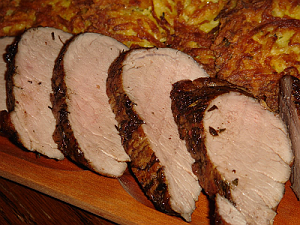

Egybesült karaj recept |
|
|  | Hozzávalók / 6 adag
|
SztoriEgy jól elkészített egészben sült hús remek kísérője lehet egy főzeléknek, vagy bármilyen más köretnek, másnap pedig kitűnő adalék egy jó szendvicshez. Sok probléma pedig nincs az elkészítésével, csak idő kell hozzá. Próbáljátok ki Ti is! Alapanyagokbacon, fokhagyma, fűszerpaprika, köménymag, sertés rövidkaraj, sertészsír, só, vöröshagyma Egyéb elnevezésektűzdelt karaj{http://www.kulinarisvilag.hu/hun/receptek/tuzdelt-sult-karaj}, sertéssült{http://www.nosalty.hu/receptek/kategoria/husetelek/sertessult} |
ElkészítésFogjuk a karajt, és egy éles kés hegyével jó pár helyen megszurkáljuk. A kapott kis "nyílásokba" töltjük a nagyobb szeletekre vágott fokhagymát. Majd jól besózzuk a húst. A megolvasztott zsírt összekeverjük a köménymaggal és fűszerpaprikával, és alaposan bekenjük vele a húst, és hagyjuk 1-2 órát kicsit pácolódni. Első körben 220 fokra előmelegített sütőbe tesszük a húst fedés nélkül kb. 20 percre. Ezután kivesszük, és hagymanegyedekkel körberakjuk a húst, majd lefedjük, és most már csak 180 fokos sütőbe tesszük vissza 1 órára. Ha még szükséges egy kis pirítás a húsra, akkor a legvégén 10 percet fedés nélkül rápirítunk. |
| sütési hőfok: 180 °C sütési mód: alul-felül sütés költség: 2000 Ft | |